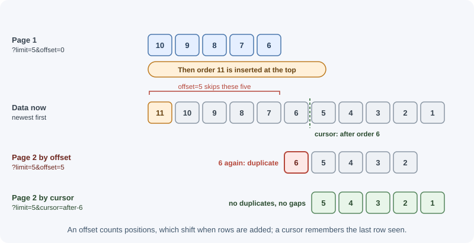
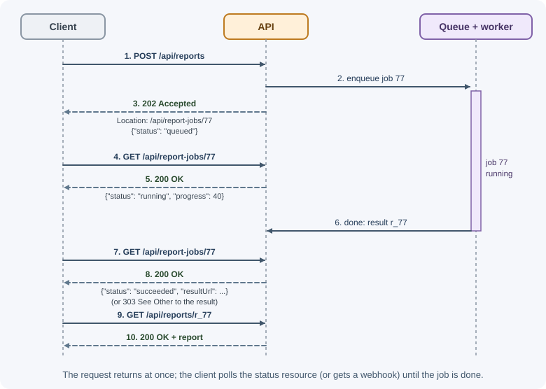

API Design Best Practices¶
An API is a product whose users are developers. Once clients depend on it, every name, field, and status code becomes hard to change. Good API design makes endpoints predictable, consistent, safe to evolve, and pleasant to use. This page collects the conventions that well-run APIs follow.
Why it matters¶
- APIs outlive their first client. A mobile app version in users' pockets may call your API for years; a breaking change can crash it.
- Consistency reduces mistakes. If every list paginates the same way and every error has the same shape, client code can be written once.
- Good design prevents performance problems. Unpaginated lists and unbounded filters are how one request takes down a database.
- Clear contracts enable parallel work. With an agreed OpenAPI document, frontend and backend teams can build at the same time.
Real-world usage¶
- Stripe uses cursor pagination. Stripe's list endpoints accept
limit,starting_after, andending_before, where the cursors are object IDs, and the response includeshas_more. Stripe describes this as cursor-based pagination. - GitHub paginates with the
Linkheader. GitHub's REST API returns a subset of results and alinkheader pointing to other pages; endpoints that supportper_pagelet clients change the page size. GitHub's best practices tell clients to follow the links rather than build pagination URLs by hand. - Stripe and GitHub version by date. Stripe requests use the account's
default API version unless the
Stripe-Versionheader overrides it. GitHub uses theX-GitHub-Api-Versionheader and says a previous version is supported for at least 24 months after a new one is released. - Stripe makes
POSTsafe to retry. Stripe accepts idempotency keys on allPOSTrequests, so a client can retry a payment request without charging twice. - Zalando publishes its API rules. The Zalando RESTful API guidelines include rules such as "MUST support problem JSON", "SHOULD prefer cursor-based pagination, avoid offset-based pagination", and "MUST not break backward compatibility". They are a good example of turning the practices on this page into a company-wide standard.
How it works¶
Naming conventions¶
| Element | Convention | Example |
|---|---|---|
| Path segments | Lowercase nouns, hyphens between words, plural collections | /api/shipping-addresses/12 |
| Query parameters | One casing style used everywhere (camelCase is common in JSON APIs) | ?pageSize=20&sortBy=createdAt |
| JSON fields | One casing style used everywhere; camelCase is most common for JavaScript clients, snake_case is also popular | "createdAt" or "created_at" |
| Booleans | Read as a yes/no question | "isActive", "hasAttachments" |
| Enumerations | Lowercase strings, documented | "status": "paid" |
| Actions | A noun sub-resource or a verb sub-path, used consistently | POST /orders/9/cancellation or POST /orders/9/cancel |
The specific choice matters less than applying it everywhere. Mixed casing
(created_at in one response, updatedAt in another) is a sign of an API
designed one endpoint at a time.
Resource modelling¶
- Model what clients care about, not your tables. A "checkout" resource may touch carts, payments, and inventory internally.
- Hide implementation details: internal flags, database column names, and join tables do not belong in responses.
- Keep representations stable and reasonably complete, so clients do not need five requests to render one screen.
- Use sub-resources for owned data (
/orders/9/items) and top-level resources for things that stand alone. - Embed or link related data deliberately. Offer an
expandorincludeparameter (?include=customer) instead of always nesting everything.
Pagination¶
Every collection endpoint needs pagination before the data grows. There are two main styles.
Offset/limit pagination¶
GET /api/orders?limit=20&offset=40 (or ?page=3&pageSize=20)
The database skips offset rows and returns limit rows.
- Pros: simple, supports "jump to page 7", easy to show total pages.
- Cons: gets slower as the offset grows (the database still walks past the skipped rows), and results shift when rows are inserted or deleted between requests, so users see duplicates or miss items.
Cursor (keyset) pagination¶
GET /api/orders?limit=20
GET /api/orders?limit=20&cursor=eyJjcmVhdGVkQXQiOiIyMDI2LTExLTAzVDEwOjE1OjAwWiIsImlkIjo5MDF9
The cursor encodes the position of the last item returned (for example its
createdAt and id). The next query asks for items after that position:
SELECT * FROM orders
WHERE (created_at, id) < ($1, $2) -- position from the cursor
ORDER BY created_at DESC, id DESC
LIMIT 21; -- one extra row tells us if there is more
- Pros: fast at any depth with an index on the sort columns; stable when data changes; ideal for infinite scroll and feeds.
- Cons: no jumping to an arbitrary page; total counts are a separate, potentially expensive query.
| Offset/limit | Cursor | |
|---|---|---|
| Performance on deep pages | Degrades | Constant |
| Consistency during inserts/deletes | Duplicates or gaps | Stable |
| Jump to page N | Yes | No |
| Typical use | Admin tables, small datasets | Feeds, large or fast-changing collections, public APIs |

Make cursors opaque (base64-encoded JSON is common) so clients cannot
depend on their contents, and always include a tie-breaker such as id in
the sort so the order is unique.
Pagination metadata¶
Return paging information with the data:
{
"data": [ { "id": "ord_901" }, { "id": "ord_900" } ],
"pagination": {
"limit": 20,
"nextCursor": "eyJpZCI6Im9yZF85MDAifQ",
"hasMore": true
}
}
Or use the standard Link header (RFC 8288), as GitHub's API does:
Link: <https://api.example.com/orders?cursor=abc&limit=20>; rel="next",
<https://api.example.com/orders?limit=20>; rel="first"
Always enforce a maximum limit (for example 100) on the server, and
use a sensible default when the client sends none.
Filtering, sorting, field selection, and search¶
| Feature | Common convention | Example |
|---|---|---|
| Exact filter | Field name as parameter | ?status=paid&customerId=cus_7 |
| Multiple values | Comma list or repeated parameter | ?status=paid,shipped |
| Ranges | Suffixes or bracket syntax | ?createdAfter=2026-11-01 or ?total[gte]=1000 |
| Sorting | sort with - for descending, comma for secondary |
?sort=-createdAt,id |
| Field selection | fields listing what to return |
?fields=id,status,total |
| Expanding relations | include or expand |
?include=customer,items |
| Full-text search | q parameter or a search endpoint |
?q=desk+lamp |
Rules:
- Allowlist filterable and sortable fields. Never pass client input straight into a database query; that invites injection and unindexed queries.
- Index what you allow clients to filter and sort by.
- Validate types: query strings are always strings, so convert and check them.
Versioning strategies¶
You will eventually need a breaking change. Versioning lets old clients keep working while new ones move on.
| Strategy | Example | Pros | Cons |
|---|---|---|---|
| URI path | /api/v1/orders, /api/v2/orders |
Obvious, easy to route, cache, and test in a browser | Version is part of the resource identity; tends to version everything at once |
| Custom header | Api-Version: 2026-11-01 |
Clean URLs; date-based versions allow fine-grained changes | Less visible; easy to forget; caches must Vary on it |
| Media type | Accept: application/vnd.example.v2+json |
Most aligned with HTTP content negotiation | Awkward for clients and tooling |
| Query parameter | /api/orders?version=2 |
Simple | Mixes versioning with filtering; easy to drop by accident |
URI versioning is the most common and the easiest to operate. Whatever you choose, version rarely: most changes can be made compatibly.
Backward-compatible vs breaking changes¶
| Usually safe (additive) | Breaking |
|---|---|
| Adding a new endpoint | Removing or renaming an endpoint |
| Adding an optional request field with a default | Making an optional field required |
| Adding a field to a response | Removing or renaming a response field |
| Adding a new enum value (if clients were told to expect unknown values) | Changing a field's type or meaning (string to number, cents to dollars) |
| Adding a new optional query parameter | Changing default behavior, sorting, or pagination |
| Relaxing validation | Tightening validation on existing inputs |
| Adding a new error code (documented) | Changing status codes clients rely on |
Two rules make additive changes safe: servers ignore unknown request fields (or reject them consistently from day one), and clients ignore unknown response fields. Tell client developers to tolerate unknown fields and enum values.
A consistent error format: RFC 9457 problem details¶
Pick one error shape and use it for every error. RFC 9457 defines a standard
one with the media type application/problem+json:
HTTP/1.1 422 Unprocessable Content
Content-Type: application/problem+json
{
"type": "https://api.example.com/problems/validation-error",
"title": "Your request is not valid.",
"status": 422,
"detail": "2 fields failed validation.",
"instance": "/api/orders",
"errors": [
{ "field": "quantity", "message": "must be at least 1" },
{ "field": "email", "message": "must be a valid email address" }
],
"requestId": "7f3c9a2e"
}
| Member | Meaning |
|---|---|
type |
A URI identifying the problem type; ideally a page documenting it. Defaults to about:blank |
title |
A short, human-readable summary of the problem type; stays the same for every occurrence |
status |
The HTTP status code, repeated for convenience |
detail |
A human-readable explanation of this occurrence |
instance |
A URI identifying this specific occurrence (often the request path or an error ID) |
| extensions | Any extra members you define, such as errors or requestId |
Clients should branch on type (stable) rather than parsing detail
(human text that may change).
Dates, times, and IDs¶
- Dates and times: ISO 8601 strings in UTC with a
Zsuffix:"2026-11-03T10:15:00Z". Avoid Unix timestamps in JSON (ambiguous units) and local times without an offset. Use date-only strings ("2026-11-03") for calendar dates like birthdays. - Money: integers in the smallest unit plus a currency
(
{"amount": 4999, "currency": "USD"}), never floating point. - IDs: treat them as opaque strings, even if they look numeric.
Prefer non-guessable IDs (UUIDs, or prefixed random IDs like
ord_8Fh2...) for public resources; sequential integers leak business volume and invite enumeration attacks. Prefixes make logs and support tickets clearer.
Bulk operations¶
Many small requests are slow; one giant request is fragile. For bulk work:
- Offer a batch endpoint such as
POST /api/contacts/batchwith a capped array size. - Decide whether the batch is all-or-nothing (a transaction) or
partial. For partial success, return
200(or207 Multi-Statusif you follow WebDAV conventions) with a per-item result:
{
"results": [
{ "index": 0, "status": 201, "id": "con_1" },
{ "index": 1, "status": 422, "error": { "title": "email is not valid" } }
]
}
- For very large imports, accept a file and process it in the background.
Long-running operations¶
Do not keep an HTTP request open for minutes. Instead:

Clients poll the status resource, or the server notifies them through a webhook or a real-time channel when the job finishes. See background jobs and webhooks.
Documentation with OpenAPI¶
The OpenAPI Specification describes an HTTP API in a YAML or JSON document: paths, parameters, request and response schemas, auth schemes, and examples.
openapi: 3.1.0
info:
title: Orders API
version: 1.0.0
paths:
/api/orders/{id}:
get:
summary: Get an order
parameters:
- name: id
in: path
required: true
schema: { type: string }
responses:
"200":
description: The order
content:
application/json:
schema: { $ref: "#/components/schemas/Order" }
"404":
description: Order not found
content:
application/problem+json:
schema: { $ref: "#/components/schemas/Problem" }
components:
schemas:
Order:
type: object
required: [id, status]
properties:
id: { type: string }
status: { type: string, enum: [pending, paid, shipped] }
Problem:
type: object
properties:
type: { type: string }
title: { type: string }
status: { type: integer }
From one document you can generate interactive docs (Swagger UI, Redoc), client SDKs, mock servers, and contract tests. Keep it in the repository and update it in the same change as the code.
Deprecation¶
When you plan to remove something, warn clients early and in a machine-readable way:
Deprecation: @1780272000 (RFC 9745: deprecated since 2026-06-01, as a Unix time)
Sunset: Fri, 01 Jan 2027 00:00:00 GMT (RFC 8594: will stop working at this time)
Link: <https://api.example.com/docs/migrate-v2>; rel="deprecation"
Also announce it in the changelog, email API consumers, monitor who still
calls the old endpoint, and only remove it after the sunset date. After
removal, 410 Gone is clearer than 404.
Idempotency keys¶
For non-idempotent operations such as payments, let clients send a unique
Idempotency-Key header. If a retry arrives with the same key, the server
returns the original result instead of charging twice. See
timeouts, retries, and idempotency.
When to use and when not to use¶
| Decision | Use | When | Avoid when |
|---|---|---|---|
| Pagination style | Cursor (keyset) | Feeds, large or fast-changing collections, public APIs | Users must jump to page N or see exact totals |
| Offset/limit | Small datasets, admin tables with page numbers | Deep pages on large tables; data changing between requests | |
| New version | URI or header version | A breaking change you cannot avoid | Additive changes; add fields or endpoints instead |
| Error format | RFC 9457 problem details | Any API that returns errors to programs | Never; at most, extend it with your own members |
| Bulk endpoint | POST .../batch with a size cap |
Clients regularly create or update many items | Rare bulk needs; per-item requests are simpler |
| Long-running work | 202 + status resource |
Work that can outlive a proxy timeout | Fast operations; a direct response is simpler |
| Idempotency keys | Idempotency-Key header |
Payments, orders, anything costly to duplicate | Naturally idempotent methods (GET, PUT, DELETE) |
The practices on this page matter most for APIs other teams or companies depend on. For a small internal API used by one frontend you also own, the same ideas apply, but you can keep the ceremony light: you can change both sides together, so formal versioning and deprecation headers are often unnecessary.
Practical examples¶
Cursor pagination in Express¶
import express from "express";
const app = express();
const MAX_LIMIT = 100;
const encodeCursor = (obj) => Buffer.from(JSON.stringify(obj)).toString("base64url");
const decodeCursor = (str) => JSON.parse(Buffer.from(str, "base64url").toString("utf8"));
app.get("/api/orders", async (req, res) => {
const limit = Math.min(Number(req.query.limit) || 20, MAX_LIMIT);
let after = null;
if (typeof req.query.cursor === "string") {
try {
after = decodeCursor(req.query.cursor); // { createdAt, id }
} catch {
return res.status(400).type("application/problem+json")
.json({ title: "Invalid cursor", status: 400 });
}
}
// Fetch one extra row to know whether another page exists
const rows = await db.findOrders({ after, limit: limit + 1 }); // keyset query
const page = rows.slice(0, limit);
const last = page.at(-1);
res.json({
data: page,
pagination: {
limit,
hasMore: rows.length > limit,
nextCursor: rows.length > limit ? encodeCursor({ createdAt: last.createdAt, id: last.id }) : null,
},
});
});
db.findOrders stands for a query like the SQL keyset example above.
A problem-details error helper¶
import { STATUS_CODES } from "node:http";
export function sendProblem(res, status, { type, title, ...extras } = {}) {
res.status(status).type("application/problem+json").json({
type: type ?? "about:blank",
// RFC 9457: with "about:blank", the title should be the standard
// status phrase ("Not Found"); custom titles belong to custom types
title: type ? title : STATUS_CODES[status],
status,
...extras,
});
}
// Usage inside handlers
// sendProblem(res, 409, {
// type: "https://api.example.com/problems/email-taken",
// title: "Email already registered",
// detail: "Try signing in instead.",
// });
// sendProblem(res, 404, { detail: "No order with id ord_901." }); // title "Not Found"
Clients branch on type, so give every problem they must handle
differently its own documented type URI, and use about:blank only for
errors that mean nothing beyond the status code.
Best practices¶
- Design the contract first (OpenAPI), review it, then implement.
- Be consistent in casing, pagination, errors, dates, and IDs across the whole API.
- Paginate every list and cap page sizes.
- Allowlist and index filter and sort fields.
- Prefer additive changes; version only for unavoidable breaking changes.
- Use one error format (RFC 9457) with stable
typeidentifiers. - Use UTC ISO 8601 dates, integer money, and opaque IDs.
- Return
202plus a status resource for slow work. - Announce deprecations with headers and a sunset date.
- Treat the API docs as part of the code.
In production¶
- Deep pages get slower and slower.
Detect: slow-query logs show queries with large
OFFSETvalues, and latency rises with the page number. Cause: offset pagination on a large table. Fix: switch to keyset pagination with an index on the sort columns plus a unique tie-breaker. - Users see duplicates or miss items while scrolling. Detect: support reports of repeated items in feeds; it happens more during busy periods. Cause: rows inserted or deleted between offset-based page requests. Fix: cursor pagination.
- One request exhausts memory.
Detect: a memory spike or out-of-memory restart right after a request
with
?limit=100000. Cause: no maximum page size. Fix: clamplimiton the server and return the applied value in the response. - A new enum value breaks clients.
Detect: client errors such as "unknown status" or deserialization
failures right after you add a value like
"refunded". Cause: clients that treat enums as closed lists. Fix: document that new values can appear, have clients handle unknown values, and announce additions. - Dates shift by hours. Detect: records created near midnight show on the wrong day for some users. Cause: local times without an offset in the API. Fix: send UTC ISO 8601 timestamps and convert only in the client's display layer.
- An endpoint is removed while someone still uses it.
Detect: a burst of
404s from one API key or user agent right after a release. Cause: removal without measuring usage. Fix: log usage per client after announcing deprecation, contact remaining callers, and return410 Goneafter the sunset date.
Important terminology¶
- API contract: the agreed description of endpoints, inputs, outputs, and errors.
- Offset pagination: paging by skipping a number of rows.
- Cursor (keyset) pagination: paging from the position of the last item seen.
- Opaque cursor/ID: a value clients must pass back unchanged and not interpret.
- Breaking change: a change that makes existing correct clients fail.
- Problem details: the RFC 9457 standard JSON error format.
- OpenAPI: a specification for describing HTTP APIs in YAML or JSON.
- Deprecation / sunset: marking a feature as discouraged / announcing when it will stop working.
- Idempotency key: a client-chosen unique value that makes retries of a request safe.
Common mistakes and misconceptions¶
- Returning unbounded lists ("we only have 50 users") that later grow to millions.
- Offset pagination on large, fast-changing data, causing slow queries and duplicate items.
- Letting clients sort or filter by any field, producing slow unindexed queries.
- Renaming a field "because it reads better" and breaking every client.
- Different error shapes per endpoint, forcing clients to special-case each one.
- Local times without offsets and floats for money.
- Sequential IDs on public resources, which leak volume and enable scraping.
- Holding a request open for a long job until a proxy times it out with
504.
Revision questions¶
- Compare offset and cursor pagination. When would you choose each?
- List three backward-compatible changes and three breaking changes.
- What are the standard members of an RFC 9457 problem details object, and which one should clients branch on?
- Why should dates be sent as UTC ISO 8601 strings and money as integers?
- How should an API handle a report that takes five minutes to generate?
- Which headers announce that an endpoint is deprecated and when it will be removed?
Further learning¶
- RFC 9457: Problem Details for HTTP APIs.
- RFC 8288: Web Linking
defines the
Linkheader used for pagination. - RFC 8594: The Sunset HTTP Header Field.
- RFC 9745: The Deprecation HTTP Response Header Field.
- OpenAPI: OpenAPI Specification (latest).
- OWASP: REST Security Cheat Sheet.